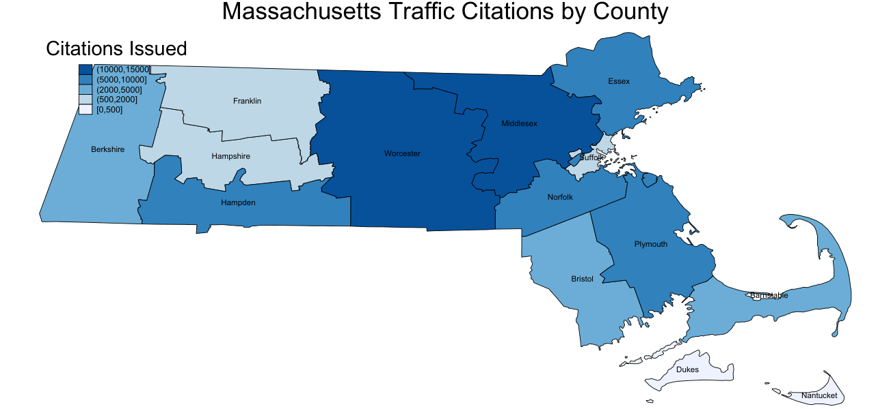
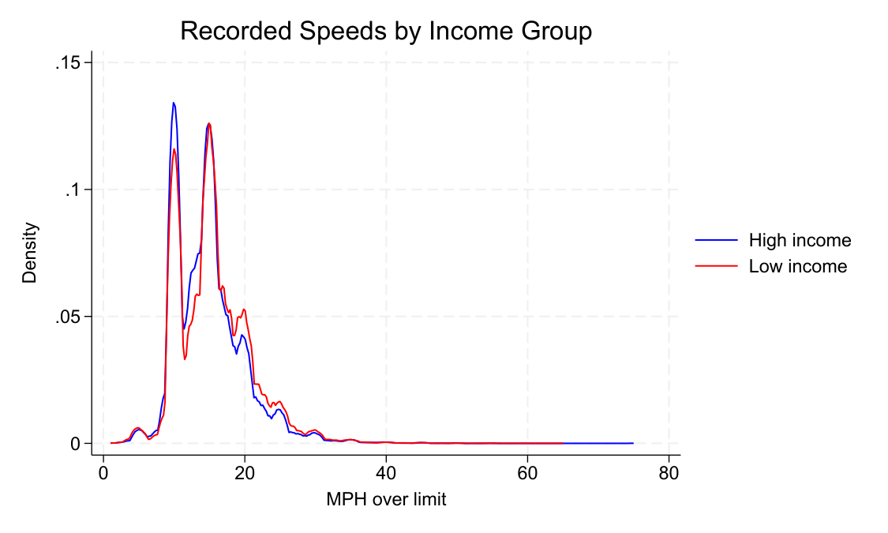
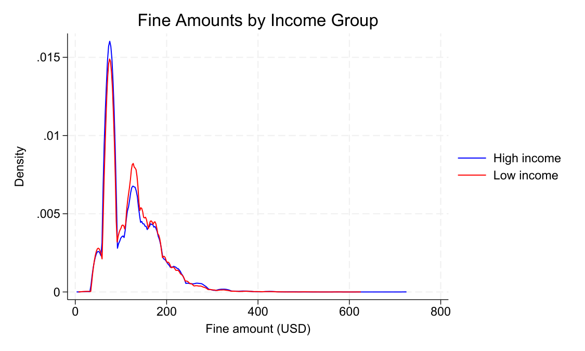

Energy Economics • AI Infrastructure • Applied Econometrics
A full replication of Makowsky and Stratmann's "Political Economy at Any Speed: What Determines Traffic Citations?" using the authors' original dataset of 68,357 Massachusetts speeding stops from 2001. The paper asks whether traffic enforcement reflects objective law enforcement or serves fiscal and political objectives — and finds strong evidence for the latter.
Do speeding tickets reflect the severity of the violation, or are they shaped by local fiscal conditions and the political costs of ticketing different drivers? Makowsky and Stratmann argue that officers act as agents of revenue-maximizing municipalities: they ticket out-of-town and out-of-state drivers at higher rates because those drivers cannot vote locally, and they respond to municipal fiscal pressure when deciding whether to issue a citation or a warning.
The replication confirms all main results. Out-of-town drivers face an 11 percentage point higher citation probability and out-of-state drivers face a 10 percentage point higher probability relative to local drivers — both highly significant across all specifications. Only 10.97% of fines issued to drivers going 10 or more MPH over the limit were congruent with the statutory formula, meaning nearly 89% reflected officer discretion. Local drivers received tickets in 31% of stops; out-of-state drivers in 66%. Among those ticketed, local drivers paid an average of $117 versus $127 for out-of-state drivers — matching the paper's reported figures of $118 and $126 to within rounding.
The municipal fiscal results also replicate. Towns with failed Proposition 2½ override referenda issue significantly more citations to non-local drivers. Each log-point increase in courthouse distance raises citation probability by 2 percentage points — consistent with the opportunity-cost hypothesis that officers target drivers least likely to contest a citation.
Worcester and Middlesex counties account for the largest share of citations, reflecting both population density and highway corridor traffic volume. The choropleth was produced by merging the citation dataset with 2024 Census county shapefiles using Stata's grmap package.

Municipalities were classified as high or low income based on whether 2001 per capita property values were above or below the median across 342 Massachusetts towns. Kernel density plots of recorded speeds and fine amounts show overlapping unimodal distributions for both groups — consistent with the paper's finding that income-group differences in citation outcomes are driven by officer discretion and fiscal incentives rather than differential speeding behavior.


The core specifications use probit models with marginal effects to estimate citation probability, and OLS with municipality fixed effects absorbed via areg to estimate the in-town penalty while controlling for unobserved municipal heterogeneity. Standard errors are clustered at the municipality level throughout. The Table 5 specification — reproduced below — is the most demanding: it interacts in-town status with town size quartiles to test whether the home-driver discount varies with municipality scale, and separates local from state police to isolate officers who do and do not answer to local fiscal incentives.
* Table 5 — OLS with municipality fixed effects * Local officers only (statepol == 0), clustered by stop municipality eststo col1: areg nowarn intown lncourtdist /// lnmphover black hispanic female lnage femalelnage cdl2 /// if statepol==0, absorb(stop_muni) cluster(stop_muni) * Town size × intown interactions eststo col2: areg nowarn town1_x_in town2_in town3_x_in town4_x_in lncourtdist /// lnmphover black hispanic female lnage femalelnage cdl2 /// if statepol==0, absorb(stop_muni) cluster(stop_muni)
The in-town penalty for local officers is -5.4 percentage points (p < 0.001). Interacting with town size reveals the gradient: the penalty is largest in the smallest towns (-14.9 pp) and shrinks monotonically as town size increases, reaching -2.5 pp in the largest quartile. The pattern is consistent with the political economy story — in small towns, officers know their neighbors and face direct political costs from ticketing them. State police show no significant in-town effect, as expected.
The full do file covers all 11 questions in the replication assignment: OLS fine regression, statutory formula compliance, multi-dataset merges, kernel density plots, choropleth mapping with Census shapefiles, summary statistics tables (estpost/esttab), and four-column probit specifications exported with outreg2.
Download do file • View on GitHub
February 2026 • Stata • dprobit • areg • Municipality Fixed Effects • Clustered Standard Errors • grmap